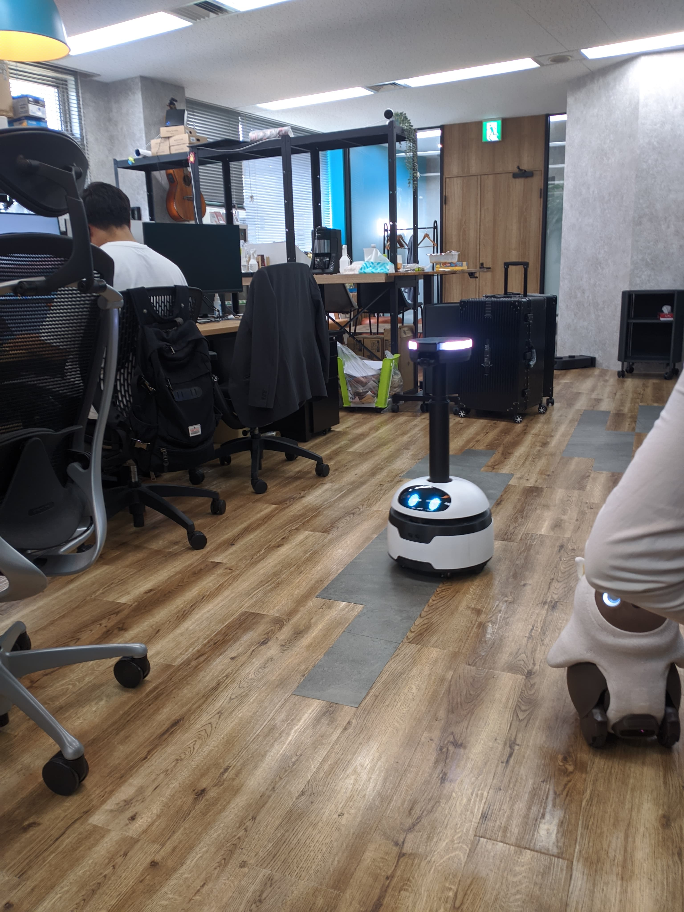

Oct 2024 – Present | Tokyo, Japan

Full-time Robotics Engineer position focusing on perception systems and sensor integration for autonomous delivery robots deployed across hundreds of production units.
Refactored the entire C++ control pipeline, reducing CPU and memory usage by 20% while resolving critical deadlock conditions in IR emitter state management and terminal I/O operations.
Migrated depth-to-point-cloud conversion from pixel color parsing to hardware-accelerated RealSense functions, significantly improving point cloud density, accuracy, and latency.
Developed computer vision system using template matching and spatial arrangement algorithms, achieving 100% accuracy improvement over third-party AI solution and eliminating customer QR code placement requirements.
Designed custom noise filtering using geometry-based Region of Interest (ROI) calculations, successfully removing body-reflection artifacts and enabling deployment on space-constrained robot platforms.
Collaborated with global Customer Success and Software teams to debug hardware issues across hundreds of deployed robots, managing complex Git workflows for frequent release cycles.
Impact: Solutions deployed to hundreds of production robots, directly improving operational efficiency and reliability.